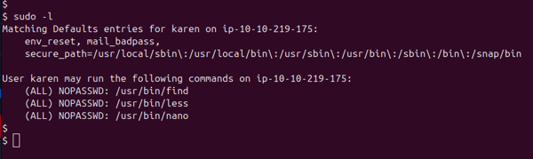
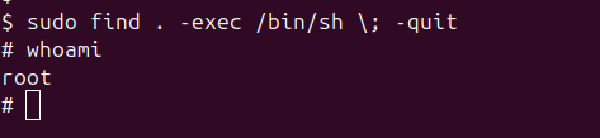

Sudo Misconfigurations
Sudo Misconfigurations
Sudo is a command that allows a user to run specific programs as the superuser (root) or another
user.
What a user can do with sudo is controlled by the /etc/sudoers file.
If this file is not configured properly (called a misconfiguration), it might let a user run dangerous
commands
or even gain full root access without needing a password.
How to Check What You Can Run with Sudo
To see what commands the current user is allowed to run using sudo, type:
$ sudo -lThis will list all the commands that the user can run with sudo. If a command has (NOPASSWD) next to it, it means the user can run it without entering a password.
If any of those commands can be used to open a shell (like vim, less,
python, etc.),
then the user may be able to become root or access sensitive parts of the system.
Practical Example: Exploiting Sudo Misconfiguration
Let’s look at a real‑world scenario where sudo is misconfigured, allowing a low‑privileged user to escalate to root.
Step 1: Listing Allowed Commands
Run the following to see which commands you can run as root:
$ sudo -l
Step 2: Using find to Spawn a Root Shell
Since /usr/bin/find is allowed without a password, you can do:
$ sudo find . -exec /bin/sh \; -quit
What NOPASSWD Means
When a command is tagged with NOPASSWD in /etc/sudoers, you can invoke that
command with sudo without being prompted for your password.
This is dangerous if the allowed command can be abused to execute arbitrary code or drop into a shell
(as find -exec does).
Key takeaway: Only use NOPASSWD for truly non‑interactive, safe binaries.
Avoid it for any tool that can spawn an editor, shell, or otherwise let you escape to an unrestricted
prompt.
Conclusion
Misconfigured sudo permissions can be just as dangerous as SUID binaries. It’s crucial to
limit which binaries are allowed
with sudo access, especially those that allow shell command execution.